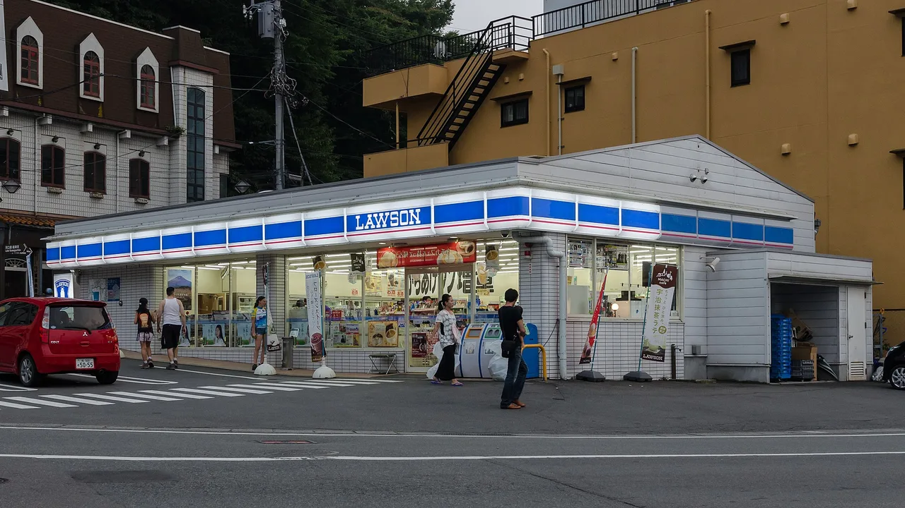
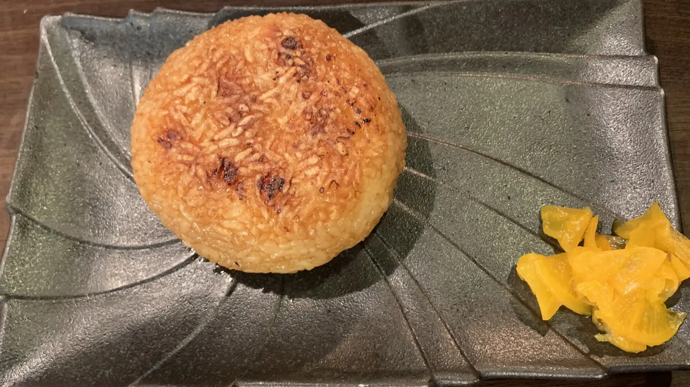

The Konbini Guide: What to Actually Buy (and How the ATMs Work)
You have heard that Japanese convenience stores are good. They are better than that. A konbini is where we get cash at 2am, pay an electricity bill, print a concert ticket, drop a parcel, use a clean toilet, and walk out with an egg sandwich that has no business tasting that good. This is the playbook we hand visiting friends: which store to pick, what to actually buy, the services nobody tells you about, and how to get through the register without freezing up.

We grew up grabbing lunch at these stores, and we still treat the konbini run as part of any trip. The thing to understand before you walk in: calling it a "convenience store" undersells it: these are small, dense, genuinely good food shops that also happen to do half your errands. Once you know what to reach for, you stop wandering the aisles and start using it like a local.
Quick answers
Q. Which konbini is the best?
A. They are close, and you will be within a block of all three in any city. 7-Eleven has the strongest in-house food and the most reliable foreign-card ATM. FamilyMart is known for its Famichiki fried chicken and a wide hot-snack case. Lawson runs the Karaage-kun nuggets and the Uchi Café desserts, and its Natural Lawson and Lawson Store 100 branches lean healthier and cheaper. Pick by what you want to eat that hour.
Q. Can my foreign card use the konbini ATM?
A. Usually yes at 7-Eleven. The ATMs run by Seven Bank are built to accept overseas-issued cards (Visa, Mastercard, UnionPay, JCB, American Express and more), and have an English menu. Other chains' ATMs are more hit-or-miss, so when you need cash, look for a 7-Eleven first.
Q. What should I buy on my first konbini run?
A. Start with the egg sandwich (tamago sando), a tuna-mayo or salmon onigiri, a piece of hot fried chicken from the front counter, and a cold bottled tea. Add whatever seasonal limited-edition item is stacked by the door. That is the konbini in one bag.
Q. How do I pay?
A. Cash works everywhere. Most stores also take contactless credit cards, IC cards like Suica and PASMO, and QR apps. You tell the staff your method or tap the on-counter reader. Hot food gets a quick "do you want it heated?" question, and they will ask if you need a bag.
The big three, and how they differ
Three chains cover most of the country: 7-Eleven, FamilyMart, and Lawson. You will rarely be more than a short walk from one of each, so we usually choose by craving rather than loyalty.
7-Eleven is our default for food you eat right away. The own-brand range is deep, the tamago sando has a cult following for a reason, and the Seven Bank ATM inside is the one most likely to accept your overseas card. If you are juggling cash and snacks on the same stop, this is the efficient choice.
FamilyMart is the hot-snack store. Famichiki, its boneless fried chicken patty, is the headline act, and the front counter usually has the widest spread of fried things, steamed buns, and corn dogs. The own-label "Famima" sweets and the convenience-store clothing line (yes, socks and t-shirts) have their own fans.
Lawson splits into useful sub-brands. A normal blue Lawson runs Karaage-kun, the bite-size fried chicken nuggets that come in rotating flavors, and the Uchi Café desserts that punch above the price. Natural Lawson stocks more wholefoods, salads, and lighter snacks, while Lawson Store 100 sells produce and basics at a flat low price. If you want fruit or a cheaper grocery shop, look for those two.
What to actually buy

Here is the part that gets oversold online, so we will be specific instead of gushing. These are the items we put in the basket without thinking.
The egg sandwich (tamago sando). Whipped egg salad on soft crustless milk bread. It sounds plain and it is the single most reordered thing in this guide. Pick one up cold; it does not need heating.
Onigiri (rice balls). The triangular rice snacks in the chilled aisle, wrapped so the seaweed stays crisp until you open it. Reliable fillings to start with: tuna-mayo (sea-mayo / ツナマヨ), grilled salmon (sake / 鮭), and pickled plum (umeboshi) if you want the sour one. Around ¥130–200 each and a full small meal for ¥400.
Oden. In the cooler months, look for the steaming tray near the register holding fish cakes, daikon radish, boiled eggs, and konjac in a light dashi broth. You point at what you want and the staff ladle it into a cup. Cheap, warming, and the most underrated thing in the store on a cold night.
Hot snacks from the front counter. The fried chicken cases we already named: FamilyMart's Famichiki, Lawson's Karaage-kun, and 7-Eleven's Nanachiki (ななチキ), its hot fried chicken. There are also American dogs (corn dogs), steamed nikuman pork buns in winter, and croquettes. These are made to go, so just say which one and how many.
Seasonal limited items (kikan gentei). Japan runs hard on limited editions. Sakura-flavored sweets in spring, chestnut and sweet-potato everything in autumn, and a constant churn of new chips, KitKats, and drinks. Whatever is stacked in a special display by the entrance is usually the thing of the month. We buy the weird one on principle.
Store-brand basics. Each chain's own label (Seven Premium, FamilyMart Collection, Lawson Select) covers drip-bag coffee, instant ramen, frozen gyoza, and snacks at a fair price. The barista-style hot coffee from the self-serve machine at the counter, poured for around ¥120, is a genuinely good cup.
If a particular snack hooks you and you want it back home after the trip, that is a real problem with a real fix. Konbini exclusives and Japan-only goods can be forwarded overseas through a proxy buyer; we cover how that works in our guide to buying from Japan and shipping it home.
The services people miss
The food is the headline. The services are why the konbini is woven into daily life here. Most visitors never use these, and a few of them are quietly the best feature in the store.
ATMs that take foreign cards. The big one for travellers, covered in its own section below. Short version: 7-Eleven first.
Paying bills. Locals bring paper utility, tax, and insurance slips to the counter and pay them in cash. You probably will not need this as a tourist, but it explains why there is sometimes a queue of people holding envelopes.
Buying event tickets. The in-store kiosks (Loppi at Lawson, the multi-copier terminals at FamilyMart and 7-Eleven) sell concert, sport, and attraction tickets, and let you pick up things you reserved online. You print a slip from the machine and pay at the register.
Parcel pickup and drop-off. Konbini act as courier counters. You can send a suitcase ahead to your next hotel, receive an online order at a nearby store instead of a hotel you have not checked into yet, and drop returns. This is how a lot of light travellers move luggage around Japan.
Printing. The multi-copy machines scan, print, and copy. Bring a file on a USB stick or send it from an app, and you have your boarding pass, ticket, or form for a few yen a page. We have printed everything from train reservations to a last-minute document at 1am.
Clean toilets. Many konbini let you use the restroom, and they are reliably clean. A quick "toire wa arimasu ka?" (is there a toilet?) and a small purchase on the way out is the polite way to do it.
WHEN THE MACHINE IS IN JAPANESE
Most konbini ATMs and ticket kiosks have an English-language button on the first screen, usually top-right or bottom-left. If you cannot find it, the Seven Bank ATM defaults to a language menu and is the easiest to operate in English. For the ticket terminals, having the reservation number from the website on your phone makes the whole thing point-and-tap.
The ATM question (and foreign cards)
This is the service worth planning around. Japan is still a place where cash matters, and the konbini ATM is the most dependable way for a visitor to get yen.
The ATMs inside 7-Eleven stores are operated by Seven Bank, and they are designed for overseas cards. They accept cards from major international networks, offer an English menu (plus Chinese, Korean, and more), and are available nearly 24 hours. If your home card has a Visa, Mastercard, UnionPay, JCB, or American Express mark, it is likely to work, depending on your issuing bank. The official, current list of accepted cards and operating hours lives on Seven Bank's own page, linked in our sources below.
The takeaway for your trip: when you need cash, the green-orange-red 7-Eleven sign is your first stop. Other chains' ATMs sometimes accept foreign cards and sometimes do not, and post office and Japan Post Bank ATMs are a solid backup. Carrying some yen still matters because small restaurants, shrines, festival stalls, and rural inns can be cash-only, which we get into in our cash-or-card guide for 2026.
Some links above are affiliate links. We may earn a commission at no extra cost to you. We only list services we'd use ourselves.
How payment works at the register
The checkout is fast and mostly wordless once you know the rhythm. Here is what actually happens.
Cash works in every store and is the no-stress default. You can place coins and notes in the small tray by the register; many counters now have an automated cash machine you feed directly. IC cards (Suica, PASMO, ICOCA) tap on the reader and are the smoothest option for small buys. Contactless credit cards and the QR-code apps (PayPay and others) are widely accepted in the big chains. You either tell the staff your method or tap the reader on the counter when prompted.
Two questions come up almost every time. The first is whether you want hot food heated, which we covered above. The second is the bag. Since Japan started charging for plastic bags, staff ask whether you need one, usually for a few yen. If you brought your own bag or do not need one, the line below is all you have to say.
That is the entire interaction: choose your items, answer the heat question, answer the bag question, tap or hand over cash, take your receipt. If you want to go deeper on which payment method to lean on across the whole trip, we break it down in cash or card in Japan in 2026.
Why konbini went viral with visitors
For years the konbini was a local secret that travellers stumbled into. Then it became a destination of its own. Short-form video did most of the work: clips of foreign visitors filming their first egg sando, ranking onigiri, and doing whole hauls at the register pushed convenience-store stops onto millions of feeds, and "konbini" turned into a travel-planning search instead of an afterthought.
The appeal holds up because the substance is real. The food is cheap and good, the stores are open late, the staff are quick, and the same shop solves food, cash, tickets, parcels, printing, and a toilet break in one stop. It photographs well, but it also genuinely works, which is why the trend has not faded the way most do.
If you like this kind of everyday-Japan stop, the same impulse that fills these aisles also fills the old Showa-era kissaten cafés with cream soda and Napolitan. Both are small, ordinary places that turn out to be the most fun part of a trip.
The link above is an internal NihongoHub guide. Where proxy-buying services charge fees, those are theirs, not ours.
Seven Bank — ATM service for cards issued outside Japan (accepted networks, English-language menu, operating hours)
Store line-ups, signature items, and register flow are from our own repeated visits across Japan and change by branch and season; check the current menu in store.